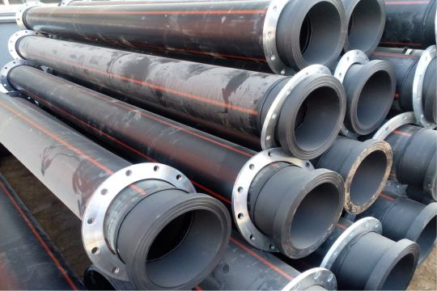
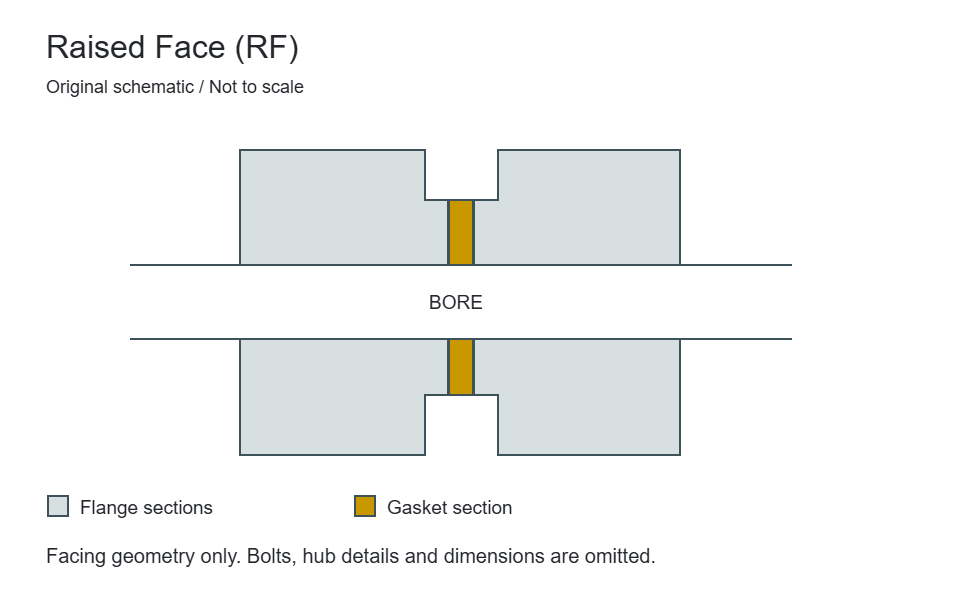
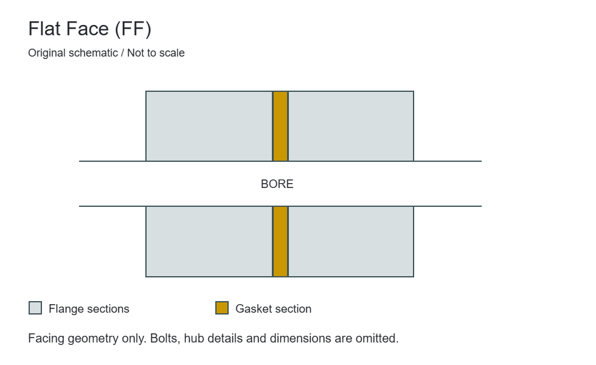
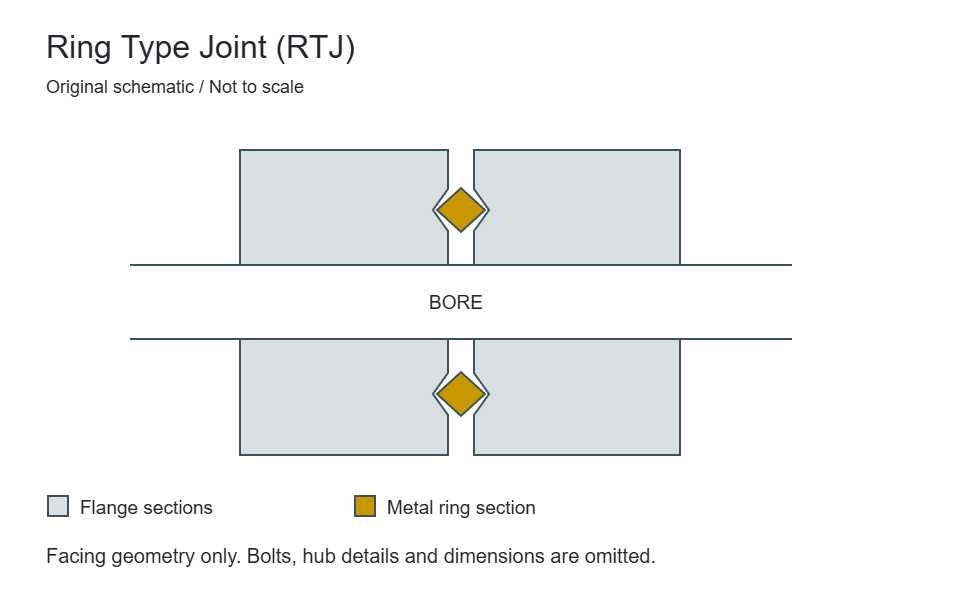

Welded connections
Weld Neck Flanges
A tapered hub carries the connection from the flange body to a butt-welded pipe end. The pipe bore and wall thickness are important parts of the flange specification.


Video unavailable in this player. Open the reel directly.
Forging in progress
A closer look at the forming process behind an industrial connection.
Flange requirements bring together material, geometry and the finished mating surface. Explore the forging process here, then visit our gallery for more views of forming, machining and flange preparation.
Visit the factory galleryOur core range
From a butt-welded pipe joint to a removable closure, each flange form has a different role. Compare the pipe-side connection, mating face and assembly requirements before defining your specification.
Welded connections
A tapered hub carries the connection from the flange body to a butt-welded pipe end. The pipe bore and wall thickness are important parts of the flange specification.

Welded connections
The flange bore slips over the pipe before the connection is secured with fillet welds. Pipe outside diameter and installation clearance govern the fit.

Closure & measurement
A solid flange closes a flanged opening without a through bore. Its bolted connection allows the closure to be removed for access when the system is safely isolated.

Mechanical connections
Internal threads connect the flange to a matching threaded pipe end. The thread form, nominal size and mating pipe specification must be stated together.

Welded connections
A recessed socket receives the pipe end, with a fillet weld at the outside of the hub. Socket depth, bore and assembly requirements distinguish it from a slip-on connection.

Mechanical connections
A backing flange works with a separate stub end or lapped pipe end. The stub end provides the gasket seating surface while the backing flange transmits the bolt load.
About Valtron
Valtron Forge & Fittings is based in Mumbai, with flanges at the centre of its industrial piping range.
Our catalogue brings connection geometry, material selection and joint requirements together. Whether your enquiry starts with a plant specification, an equipment nozzle or an existing connection, the details of that interface guide the conversation.
Buttweld and forged fittings support the adjoining pipework. For each requirement, material, dimensions, inspection scope and delivery expectations are discussed as part of the complete order.
More about ValtronWelded connections, mechanical joints, closures and measurement assemblies in one organised range.
Material grade, size, facing and standard considered together, with drawing references for non-standard interfaces.
Share your requirement by email or WhatsApp with our Mumbai team, including documentation and delivery priorities.
Equipment & measurement connections
Extended nozzles, instrumented flange pairs and matching equipment interfaces need more than a nominal size. Start with the connection form, then identify the complete assembly.

Welded connections
An extended neck combines a flanged connection with a longer nozzle section. Neck length, bore and end preparation must be specified for the intended equipment connection.

Closure & measurement
Pressure-tapping connections distinguish an orifice flange from a general pipe flange. A matched assembly supports the differential-pressure measurement arrangement around an orifice plate.

Mechanical connections
A companion flange is selected to mate with a particular flanged connection. The term describes its role in an assembly, so the actual connection form and dimensions must be identified.
Materials & grades
Corrosion environment, temperature, fabrication and the mating components all influence material selection. Explore the families below, then specify the exact grade and required product condition in your enquiry.
Material guides are selection references. Grade availability, suitability and documentation are confirmed for the specific requirement.
Industrial applications
A flange connection must suit its operating environment as well as its mating dimensions. These application contexts highlight the details to bring into a project enquiry.

Process lines, equipment nozzles and maintenance connections require coordinated material, pressure-temperature and inspection requirements.
Pipe flange standardsFluid chemistry, corrosion, cleaning conditions and gasket compatibility are central to selecting a flange for chemical service.
Material selectionSeawater exposure, dissimilar materials and maintenance access influence joint selection for marine and coastal piping systems.
Material selectionReview thermal cycling, elevated-temperature material requirements and the weld connection for utility and process lines.
Alloy steel reference
Coordinate the applicable waterworks standard, coating, gasket coverage and flange-to-pipe connection.
Waterworks flange standardsMatch existing bolt patterns, facing and bore from a verified drawing before specifying a replacement connection.
Replacement mating connectionsStandards & dimensions
A standard, edition, flange type and rating belong together.
ASME Class, PN and table-based systems cannot be treated as interchangeable labels. For large-diameter connections, identify the dimensional series; for measurement and isolation, use the relevant assembly reference.
Explore all 18 standards guidesPipe flange dimensions and pressure-temperature ratings within its specified size, material and type scope.
Large-diameter steel flanges; identify Series A or Series B rather than using the parent standard alone.
Orifice flanges, including applicable pressure-tapping arrangements and flange configurations.
Operational line blanks within the standard scope, including relevant spade and spacer arrangements.
Steel flanges designated by PN, with the exact flange type and material specified.
Steel pipe flanges for waterworks service within the specified class and dimensional scope.
Facings & gasket seating
The face, gasket and mating flange work as one joint. Compare common arrangements, then confirm the surface finish, dimensions and assembly requirements under the project standard.

A raised face provides a gasket seating surface inside the bolt circle. Specify the face dimensions, finish and gasket as a coordinated joint requirement.

A flat face has no raised gasket seating step. Confirm the gasket coverage, mating flange material and joint loading rather than identifying it only by appearance.

An RTJ face uses a machined groove and a matching metal ring gasket. Ring and groove designations must be specified as a system, not chosen by nominal pipe size alone.
Original schematics are not to scale. Tongue-and-groove, male-and-female and lap-joint arrangements are covered in the full facing guide.
Quality & inspection requirements
Quality requirements begin with a clear purchase specification. Confirm the applicable checks, acceptance criteria and documentation with the enquiry so the order can be assessed against the right requirements.
Specify the material designation and traceability records. Include any required material verification or supplementary testing in the order.
Define the bore, bolt circle, hole pattern, thickness and weld preparation against the governing standard or approved drawing.
Identify gasket seating geometry, surface finish and inspection criteria. The flange and gasket must be reviewed as a joint.
Agree the required certificates, inspection records, marking and release documentation for the specific project before dispatch.
Replacement & drawing-based enquiries
An equipment interface or replacement flange often needs more detail than a catalogue name can provide.
Include the drawing number and revision, bolt circle, hole quantity, bore, facing and pipe-side geometry. For nozzle or instrument connections, identify projection, weld preparation and tapping requirements as applicable.
Drawings can be shared by email or in the WhatsApp conversation. Offered design and supply scope are confirmed after review.
From enquiry to delivery planning
Keep the technical requirement and the delivery requirement together.
A complete enquiry reduces uncertainty around dimensions, material, documentation and handling. Include the project schedule and destination early, especially when packing, marking or inspection release needs to follow a specific procedure.
Our approachIdentify the mating flange, nominal size, bolt pattern and pipe connection. Attach a drawing reference for non-standard geometry.
Share design conditions, material grade, facing, standard and inspection or documentation requirements.
State quantities, drawing revisions and any project-specific acceptance or release requirements for the quotation.
Agree destination, schedule, packing, marking and protection of machined faces and weld ends for the shipment.
Supporting connections
Export enquiries
 United States
United States United Arab Emirates
United Arab Emirates Saudi Arabia
Saudi Arabia Germany
Germany United Kingdom
United Kingdom Qatar
Qatar Australia
Australia Canada
CanadaShare your delivery destination, flange specification and required date. Supply availability, shipping and documentation are confirmed for each enquiry.
Testimonials
Valtron Forge & Fittings has been our go-to supplier for stainless steel pipes and flanges. Consistent quality, proper documentation, and always on schedule - highly dependable partner.
We import Inconel and Monel fittings regularly from Valtron Forge & Fittings. Their material test certificates and export packaging are impeccable. Excellent communication throughout.
Competitive pricing without compromising on quality. Their team helped us pick the right duplex grade for a marine project, and delivery was ahead of schedule.
Third-party inspection
Agency acceptance, inspection scope and documentation are confirmed for each order. Logos do not imply company certification or endorsement.
Common flange enquiries
Practical answers to the details that often shape a flange quotation.
Discuss your requirementInclude the flange type, nominal size, material grade, dimensional standard, class or PN, facing and quantity. Add the pipe bore or schedule where relevant, delivery destination and any inspection requirements. For a non-standard connection, include a drawing number and revision.
Start with the piping design and the required pipe-side connection. A weld neck uses a butt-welded hub, a slip-on flange fits over the pipe, and a socket-weld flange receives the pipe in a recessed socket. The designer should review loading, fabrication access and service conditions before selecting the construction.
No. Rating designations and dimensional systems must be checked under their own standards. A similar number or a matching nominal size does not establish the same bolt pattern or allowable pressure. The material and design temperature are essential to the rating assessment.
Yes. Send the existing component designation or a controlled drawing showing the mating face, bolt pattern, bore and pipe-side connection. Include the material, operating requirements and any site constraints. The proposed design and offered scope are confirmed against those details.
State the required material records, traceability, dimensional inspection and any supplementary tests in your enquiry. Requirements and availability are agreed for the specific order; a product name or material family alone does not imply a certification package.
Use the quote form to provide the drawing reference and project details, then send attachments by email or in the WhatsApp conversation. Include destination, required date, packing, marking and face-protection requirements so they can be reviewed with the quotation.
From specification to enquiry
Send your material, size, rating, facing and quantity. Include a drawing reference for non-standard requirements.